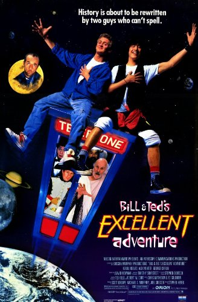
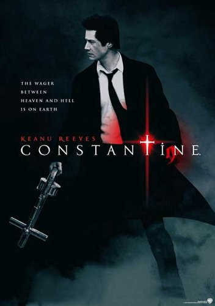

Keanu Reeves is a Canadian movie star that is famous for his many blockbuster roles. Staring in the Bill and Ted franchise, the Matrix franchise and the John Wick movies to name a few. Reeves also plays the bass guitar for the bands Dogstar and Becky. He has also Acted onstage, he performed as Prince Hamlet for the Manitoba Theatre Centre's production of Hamlet. Keanu Reeves has also directed one movie Man of Chi.
The Career of Keanu Reeves
Intro to Keanu Reeves

Skills and Talents
- Acting of course
- Playing bass guitar
- Knowing different fighting styles and martial arts
List of Movies

John Wick: Chapter 3 - Parabellum

Bill and Ted

Constantine
The Devil's Advocate
Keanu Reeves has Lived in
- Beirut Lebanon
- Toronto Canada
- Los Angeles USA
Collaborators
- Director: Chad Stahelski
- Directors: Lana Wachowski and Lilly Wachowski
- Actor: Laurence Fishburne
List of Awards
- Blockbuster Entertainment Awards: Favorite Actor 2000
- Bravo Otto: Best Actor 1994
- Csapnivalo Awards: Best Actor in a Leading Role 1999